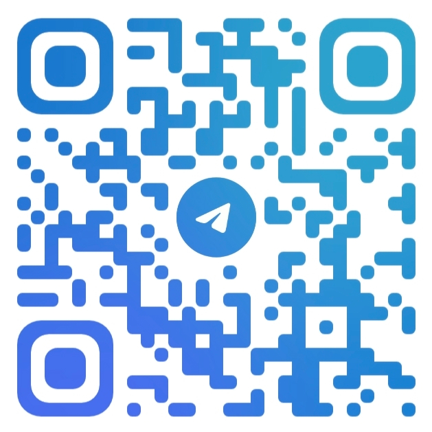

Связь
Контакты


АРК создаёт и реализует культурные, территориальные и digital-проекты. Системный подход: аналитика, проектирование, внедрение. Серьёзные задачи. Конкретные решения.
Смотреть проектыАРК — это авторская проектная система, которая соединяет аналитику, культуру и цифровые решения в единую рабочую среду.
АРК занимается задачами, которые не решаются стандартным набором услуг. Культурные инициативы, развитие территорий, цифровые продукты, аналитические платформы — каждый проект требует собственной логики и структуры.
Направление работает с организациями, учреждениями и территориями, которым нужен системный взгляд — не просто красивый дизайн или шаблонная стратегия, а реальное проектирование от первого вопроса до конечного решения.
Интеллектуальный аналитический сервис для учреждений культуры, науки, образования и цифровых архивов.
Стратегические концепции туристического развития с планами реализации, инфраструктурой и партнёрской моделью.
Комплексный проект по инвентаризации, цифровому учёту и развитию музея в Калининградской области.
Цифровой историко-культурный проект о промышленном наследии района и архивных материалах.
Систематизация архивных материалов и создание цифровых фондов для организаций и учреждений.
Выстраивание сотрудничества федеральной организации с Яндексом по цифровым и AI-направлениям.
Аналитика и концептуальное развитие культурных, просветительских и digital-форматов центра.
Федеральная инициатива по карьерной навигации и взаимодействию студентов, вузов и работодателей. Включает ПрофиТрек, цифровые решения для стажировок и карьерной ориентации молодёжи.
Веб-сервис для автоматического создания email-рассылок и постов на основе контента сайтов организаций.
OCR-сервис автоматической каталогизации архивных документов и формирования карточек фондов.
Цифровой AI-навигатор стажировок и карьерного старта для студентов и молодых специалистов.
Цифровой навигатор для внутренних процессов организаций. Структурирование рабочих задач.
Лекции, образовательные материалы и просветительские форматы по AI и цифровым технологиям.
Экспертиза проектов в сферах образования, цифровых решений, социальных инициатив и развития территорий.
Разработка учебных материалов по AI, LLM и практическому применению цифровых инструментов.
Если есть идея, проект или пространство, которое хочется развить — готовы обсудить.
Короткий экспресс-разбор: смотрим на ситуацию вместе, честно и по существу
Подходит для культурных инициатив, digital-продуктов, территориальных концепций — любых проектов, где нужен свежий взгляд и системная работа.
